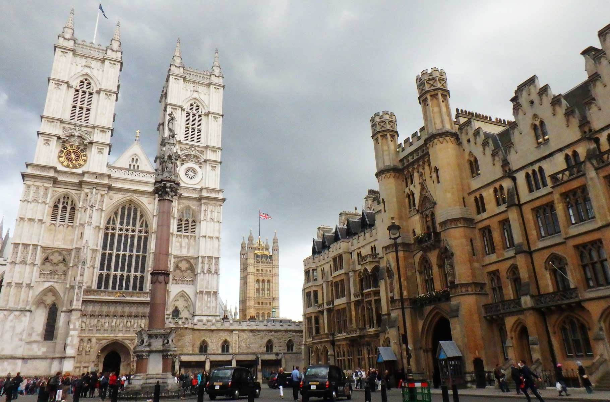
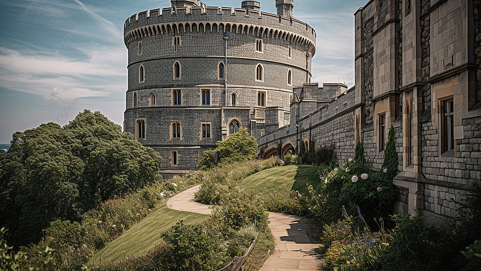
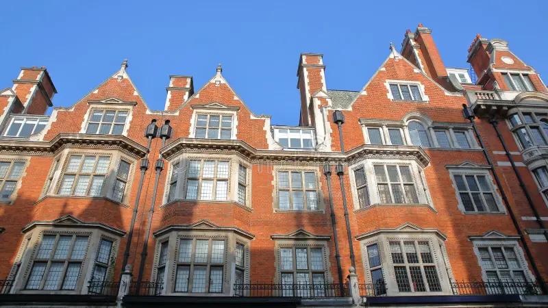
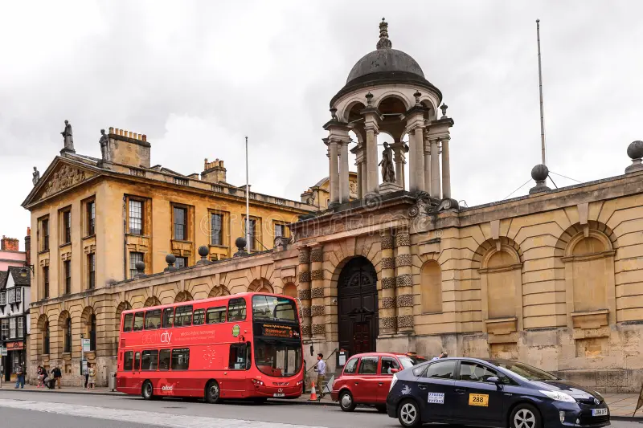
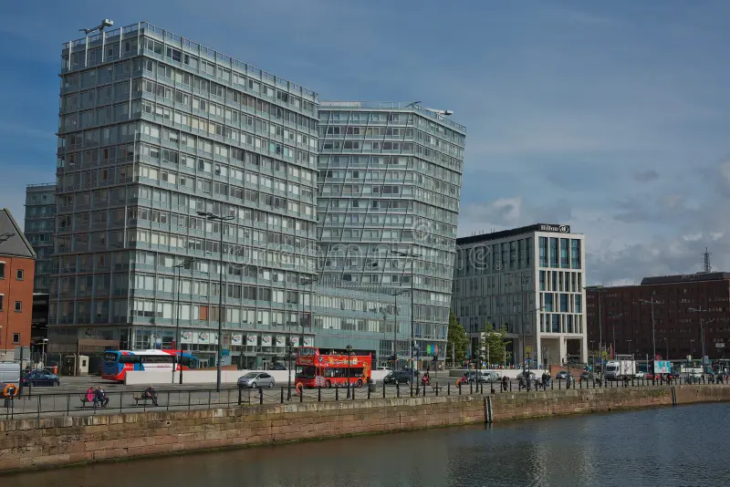
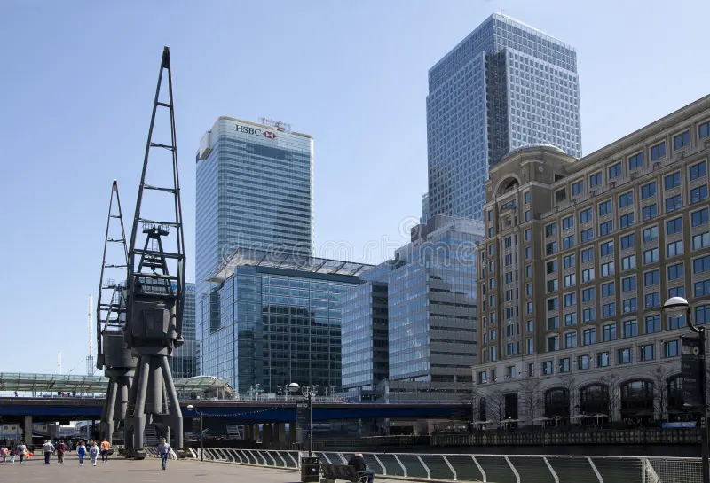
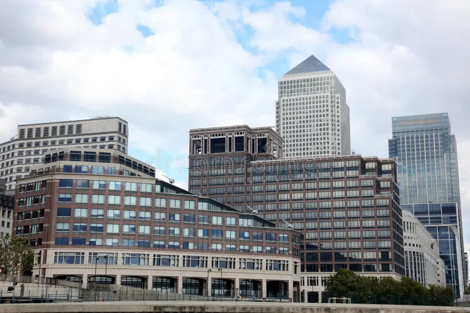

Catedral antiga

Centro de Londres

Porto de Londres à noite

Castelo na Escócia

Oxfoard visão de cima

Apartamento no País de Gales

Apartamento em Londre

Entrada de Oxfoard

Prédio moderno do Reino Unido

Centro urbano do Reino Unido

Estação de Mêtro

Prédios corporativos modernos